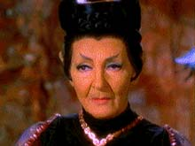
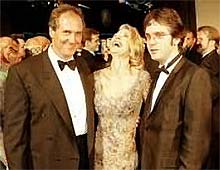
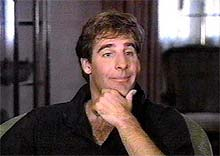

|
O
segredo a alma do negcio
 Setembro de 2001. Se tudo acontecer
conforme planejado e as greves de atores e escritores de Hollywood
no atrapalharem muito, este ser o ms em que teremos a estria
da prxima srie de Jornada nas Estrelas. Brannon Braga e
Rick Berman j esto trabalhando h mais de um ano no projeto e
agora, pela entrada na fase de pr-produo, os primeiros
detalhes mais consistentes comeam a vazar... ou no. Setembro de 2001. Se tudo acontecer
conforme planejado e as greves de atores e escritores de Hollywood
no atrapalharem muito, este ser o ms em que teremos a estria
da prxima srie de Jornada nas Estrelas. Brannon Braga e
Rick Berman j esto trabalhando h mais de um ano no projeto e
agora, pela entrada na fase de pr-produo, os primeiros
detalhes mais consistentes comeam a vazar... ou no.
Aparentemente sabemos de muita coisa, mas no temos certeza se o
que sabemos realmente a verdade. H cerca de um ms, um
documento supostamente enviado pela Paramount a diversas agncias
de atores espalhadas pelos EUA com as descries de todos os
personagens principais da srie teria vazado para a Internet.
Desde ento, o estdio no confirmou nem negou o documento, mas
as informaes que comearam a surgir foram todas consistentes
com aquele papel original. Segundo ele, a srie seria ambientada
no sculo 22, a bordo de uma nave chamada Enterprise, anterior
vista na Srie Clssica.
 O
papel apresentava sete personagens fixos da tripulao,
comandada pelo capito Jackson Archer. Apenas dois deles eram
aliengenas (o mdico de bordo e a primeiro-oficial, um Vulcana
j velha conhecida dos fs de Jornada --T'Pau). Rick
Berman confirmou recentemente que os personagens principais seriam
de fato sete, com dois aliengenas. Essa foi a maior confirmao
j apresentada para o documento, mas no a nica.
Berman tambm disse que a prxima srie ser ambientada em um
perodo nunca antes visto em Jornada, o que corrobora a
tese do documento. Ele tambm indicou que a escolha de elenco j
est sendo feita e que as filmagens do piloto devem comear em
maio --data consistente com a apresentada pelo papel
contrabandeado para a net.
At agora, no houve nenhuma nica informao vinda da equipe
de produo contrria ao documento. Ademais, vrias fontes
confiveis apontaram na direo de uma srie que precedia
todas as demais cronologicamente e que tinha como foco uma nave
Enterprise.
Diante de tantas coincidncias, ou esse documento de fato
verdadeiro, ou trata-se do maior engodo j promovido entre os fs
de Jornada nas Estrelas. Prefiro acreditar na primeira hiptese.
"Eliminando o impossvel, tudo o que resta, por improvvel
que seja, s pode ser a verdade", diria Sherlock Holmes. E
eu concordo com ele.
Supondo que seja verdade e que j saibamos definitivamente a
premissa do novo seriado, por que a Paramount estaria escondendo
tanto essa informao? Por que no vir a pblico e dizer
"Ok, vocs nos pegaram, essa a premissa verdadeira"?
 difcil
diagnosticar com preciso os porqus, mas que eles existem,
ningum duvida. Eu consigo imaginar alguns deles sem grandes
esforos. Em primeiro lugar, no seria nada bom soltar bombas
sobre a nova srie bem no momento em que Voyager est se
preparando para dar seu adeus TV americana. Falar muito de Srie
V seria ofuscar demais a produo que Kenneth Biller est
concluindo para Rick e Brannon (os dois claramente largaram Voyager
na mo de Biller e voltaram todos os seus esforos para a nova
produo).
Outra possibilidade o fato de que a srie pode ainda no
estar vendida para nenhuma rede (embora todos j saibamos que ela
vai acabar na UPN, emissora que foi inaugurada em 1995, justamente
com a estria de Voyager). Eles no fariam um anncio
oficial de uma srie que ningum sabe ainda onde vai passar.
Mais uma razo: talvez eles nem saibam o nome do programa! A
folha de elenco apontava a srie como "nova srie de Jornada
nas Estrelas ainda sem ttulo". Como anunciar um
programa que ainda no tem nome?
Na verdade, essa histria do nome d muito o que falar. Em princpio,
tendo a crer que a srie v se chamar "Star Trek:
Enterprise". Por qu? Simples. A Paramount registrou todos
os domnios de Internet "startrekenterprise" (.com,
.net, .org, .tv), um procedimento que ela tambm adotou com o
nono filme do franchise (tanto para o nome primeiro escolhido por
Piller, "Prime Directive", como para o nome escolhido
pelo estdio, "Insurrection").
Alm disso, todo mundo diz que a nova srie ser ambientada em
uma Enterprise (tem gente que diz que no uma do sculo 22,
mas uma do sculo 29, 25 ou 26 --o que ningum discute o nome
"Enteprise"), e nos ltimos dois seriados de Jornada, o
nome do principal veculo espacial da srie acabou dando o nome
ao programa (Deep Space Nine e Voyager).
Somando dois e dois, podemos pensar que Rick e Brannon trabalharam
com o nome provisrio "Star Trek: Enterprise" e agora
esto coando a cabea para ver se acham alguma coisa melhor.
Como o tempo est acabando e nada mais apareceu, parece que vai
ser isso mesmo.
Por fim, a dupla que est no comando do franchise pode estar com
medo de sedimentar os rumores e receber uma avalanche de crticas,
antes mesmo do seriado entrar no ar. H muitos trekkers ranzinzas
que so totalmente contrrios a uma srie anterior Clssica
e que j esto atirando pedras na dupla por antecipao.
 Adiando
o anncio da srie para quando o elenco estiver escalado (de
repente com algumas agradveis surpresas, como o talentoso Scott
Bakula, ator que protagonizou a srie "Quantum Leap"),
o estdio pode abafar crticas ruins, tanto por diminuir o tempo
entre o anncio e a exibio como por apresentar
"boas" notcias junto com a premissa da srie.
A ttulo de exemplo, j ouvi gente dizendo que no estava nem a
para a srie, mas que se Bakula se confirmar como o capito, vai
acabar assistindo. Ou seja, essa pode ser uma ttica que
funciona.
Alm dessas trs razes mais bvias, pode apostar que a mente
burocrtica dos executivos da Paramount (coitados do Berman e do
Braga, que levam a culpa pelo silncio imposto pelos chefes
deles) consegue criar outras, mais ou menos estapafrdias.
Independentemente delas, uma coisa certa: do jeito que a
Paramount est cheia de espies trekkers (vazam roteiros de Voyager,
fotos do interior do estdio, papis de escalao de atores
convidados, e por a vai), o segredo no poder ser contido por
muito mais tempo... se que ainda h algum.
Salvador
Nogueira, jornalista, escreve regularmente
sobre
a nova srie de Jornada nas Estrelas para o Trek
Brasilis
|